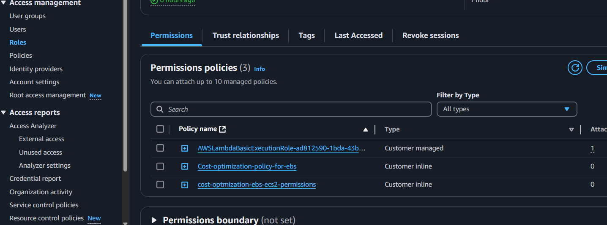

💡 Introduction
Welcome to the world of DevOps! Cloud computing offers incredible flexibility and scalability, but it's easy to accumulate hidden costs if you're not careful. One common culprit? Unused EBS snapshots. These snapshots, created to back up your data, can quickly eat into your AWS budget if you forget to clean them up.
In this post, I'll show you how to reclaim those lost dollars with a simple but effective solution: an automated, serverless function that hunts down and deletes orphaned EBS snapshots. We'll build a Python-based AWS Lambda function that automatically removes:
- Snapshots not associated with any EBS volume.
- Snapshots of volumes attached to stopped or terminated EC2 instances.
This is a great way to reduce storage costs and maintain a cleaner AWS environment.
💡 Why Serverless?
Before we dive into the code, let's talk about why we're using AWS Lambda, a serverless compute service:
- Cost-Effective: You only pay for the compute time your function actually uses. For infrequent tasks like snapshot cleanup, this is much cheaper than running a dedicated server.
- Scalable: Lambda automatically scales to handle the workload, so you don't have to worry about provisioning or managing servers.
- Easy to Integrate: Lambda seamlessly integrates with other AWS services, such as CloudWatch Events for scheduled execution.
💡 Prerequisites: What You'll Need
Before you get started, make sure you have the following:
- AWS Account: Access to your AWS Management Console.
- Basic Python Knowledge: A familiarity with Python syntax and concepts.
- AWS CLI (Optional): The AWS Command Line Interface is useful for local testing, but not strictly required for this guide. You can install it via:

💡 Building the Lambda Function: Step-by-Step
Here's a breakdown of how to create and configure the Lambda function:
- Create a Lambda Function:
- Go to the AWS Lambda console in the AWS Management Console.
- Click "Create function" and select "Author from scratch."
- Give your function a descriptive name (e.g., "ebs-snapshot-cleanup").
- Choose
Python 3.12as the runtime.

- Write the Python Code:
- Replace the default code in the Lambda function editor with the following Python script:
import boto3 def lambda_handler(event, context): ec2 = boto3.client('ec2') # Get all EBS snapshots response = ec2.describe_snapshots(OwnerIds=['self']) # Get all active EC2 instance IDs instances_response = ec2.describe_instances(Filters=[{'Name': 'instance-state-name', 'Values': ['running']}]) active_instance_ids = set() for reservation in instances_response['Reservations']: for instance in reservation['Instances']: active_instance_ids.add(instance['InstanceId']) # Iterate through each snapshot and delete if it's not attached to any volume or the volume is not attached to a running instance for snapshot in response['Snapshots']: snapshot_id = snapshot['SnapshotId'] volume_id = snapshot.get('VolumeId') if not volume_id: # Delete the snapshot if it's not attached to any volume ec2.delete_snapshot(SnapshotId=snapshot_id) print(f"Deleted EBS snapshot {snapshot_id} as it was not attached to any volume.") else: # Check if the volume still exists try: volume_response = ec2.describe_volumes(VolumeIds=[volume_id]) if not volume_response['Volumes'][0]['Attachments']: ec2.delete_snapshot(SnapshotId=snapshot_id) print(f"Deleted EBS snapshot {snapshot_id} as it was taken from a volume not attached to any running instance.") except ec2.exceptions.ClientError as e: if e.response['Error']['Code'] == 'InvalidVolume.NotFound': # The volume associated with the snapshot is not found (it might have been deleted) ec2.delete_snapshot(SnapshotId=snapshot_id) print(f"Deleted EBS snapshot {snapshot_id} as its associated volume was not found.") - Increase the Timeout Value
Lambda has a default Timeout that is not sufficient to use so we have to go to Configuration tab and increase the timeout to at least 10 seconds - Add Permissions to Lambda
We have to add additional permissions to the Lambda function so it can perform different operations. We'll follow the principle of least privilege by only adding required permissions- Go to the Configuration and select Permissions
- Click Add Permissions and create Inline Policy
- Configure the policy as follows:
- Service: Select EC2.
- Actions: Choose only the following permissions:
- DescribeSnapshots
- DescribeInstances
- DescribeVolumes
- DeleteSnapshots
- Resources: Set the permissions to apply to all resources for simplicity. If you need stricter control, specify the resource ARNs. Review and Assign the Policy:
 - Configure Test event and use to test
The lambda function test is successful if it runs and performs all operations
💡 How the Code Works:
Let's break down the code snippet.
- The lambda_handler is the place we write the main script that we want to be executed when we envoke the function
- Describing instances and volumes: The next operation is to collect volumes and instances
ec2 = boto3.client('ec2')The code gets access to the EC2ec2.describe_volumes(VolumeIds=[volume_id])Describes the associated volumes with specified volume ID. - Handling Errors: The last part of the code is a very important concept where we handle errors and the
tryandexceptparts of the code help us handle any issues with finding volumes. This is known as exception handling except ec2.exceptions.ClientError as e:The is where exceptions are handled and the volumes that can not be found
💡 Testing and Real-World Use Cases
Let's test the Lambda function and use real-world scenarios. Follow these steps to see how the function performs:
Here are 2 use case that can test Lambda
- Snapshots that are not Attached to the Volume
- Snapshots of Deleted Instances
💡 Conclusion: Save Money, Automate Your Cloud
Congratulations! You've built a serverless solution for automatically cleaning up orphaned EBS snapshots. This demonstrates the power of cloud services in resource management and offers hands-on experience in automating AWS tasks using Python.
Feel free to customize this and create a CloudWatch rule to automatically run the Lambda function periodically. Thank you for following this post